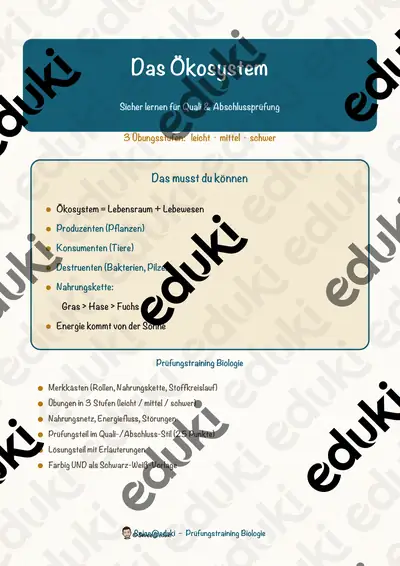

Ökosysteme und Nahrungsnetze: Arbeitsblätter für Klasse 5–9 (Biologie)
Ökosysteme verbinden Pflanzen, Tiere und Umwelt. Nahrungsketten, Biotope und Artenvielfalt zeigen, wie fein das Gleichgewicht ist und wie Eingriffe wirken.
Im Unterricht begegnen den Lernenden zuerst Biotop und Nahrungskette. Wer weitergeht, behandelt Nahrungsnetz, Artenvielfalt, Nationalpark sowie Naturschutz.
Wo genau im Lehrplan das Thema steht, unterscheidet sich von Land zu Land, häufig im Fach Biologie in der Sekundarstufe I (Klasse 5–9). Gemeinsames Ziel: die Schülerinnen und Schüler beschreiben Beziehungen in einem Lebensraum.
Wer Ökosysteme und Nahrungsnetze auf mehrere Stunden verteilt, startet mit Biotop, übt an Nahrungsnetz und schließt mit Nationalpark ab. Alle Blätter sind kopierfertig und enthalten Lösungen für die schnelle Kontrolle. Leistungsstarke und schwächere Lesende erhalten über die Lesespurgeschichten Texte in drei Stufen.
8 passende Materialien stehen bereit, etwa 3D-Zauberbild Lebensraum Wald, Der Nationalpark und Das Ökosystem. Vertreten sind 2 Lesespurgeschichten, 1 Bastelvorlage, 1 Prüfungstraining und 4 Lückentexte mit Hörverstehen; die Stufen reichen über Klasse 4–8. Eine Nahrungskette als Legespiel mit Tierkarten macht Abhängigkeiten sichtbar.
Das gehört zum Thema
Passende Arbeitsblätter und Materialpakete

3D-Zauberbild Lebensraum Wald – Umkehrperspektive basteln, Sachtext und Forscherauftrag, 3-fach differenziert (Klasse 3/4)

Der Nationalpark – Lesespurgeschichte mit Rätselaufgaben (Klasse 5)

Die Nahrungskette – Lesespurgeschichte mit Rätselaufgaben (Klasse 7)

Das Ökosystem – Prüfungstraining Biologie (Klasse 8)

Nationalpark Lückentext mit Wortspeicher Hörverstehen und Suchsel

Nahrungskette Lückentext mit Wortspeicher Hörverstehen und Suchsel

Biotop Lückentext mit Wortspeicher Hörverstehen und Suchsel

Artenvielfalt Lückentext mit Wortspeicher Hörverstehen und Suchsel
Häufige Fragen
Für welche Klassenstufe passen die Arbeitsblätter zu Ökosysteme und Nahrungsnetze?
Der Schwerpunkt liegt auf Klasse 5; insgesamt deckt die Auswahl (8 Titel) Klasse 4–8 ab. In der Beschreibung jedes Materials steht die empfohlene Stufe.
Welche Inhalte decken die Materialien zu Ökosysteme und Nahrungsnetze ab?
Behandelt werden unter anderem Biotop, Nahrungskette, Nahrungsnetz und Artenvielfalt. Welche Aspekte in Ihrer Klasse Vorrang haben, richtet sich nach dem Lehrplan Ihres Bundeslandes.
Wie setze ich Ökosysteme und Nahrungsnetze im Unterricht ein?
Eine Nahrungskette als Legespiel mit Tierkarten macht Abhängigkeiten sichtbar. So entsteht aus den Blättern eine kleine Einheit, die sich auf zwei bis drei Stunden verteilen lässt.
Mehr Material nach Fach und Klasse
- Alle Materialien Biologie
- Arbeitsblätter Biologie Klasse 5
- Arbeitsblätter Biologie Klasse 6
- Arbeitsblätter Biologie Klasse 7
- Arbeitsblätter Biologie Klasse 8
- Arbeitsblätter Biologie Klasse 9
- Unterrichtsmaterial Klasse 5
- Unterrichtsmaterial Klasse 6
- Unterrichtsmaterial Klasse 7
- Unterrichtsmaterial Klasse 8
- Unterrichtsmaterial Klasse 9
Verwandte Lehrplanthemen
- Atmung, Verdauung und Organe (Biologie, Klasse 5–9)
- Fische und Meerestiere (Biologie, Klasse 4–8)
- Fotosynthese (Biologie, Klasse 5–9)
- Herz und Blutkreislauf (Biologie, Klasse 5–9)
- Pubertät, Sexualität und Aufklärung (Biologie, Klasse 5–9)